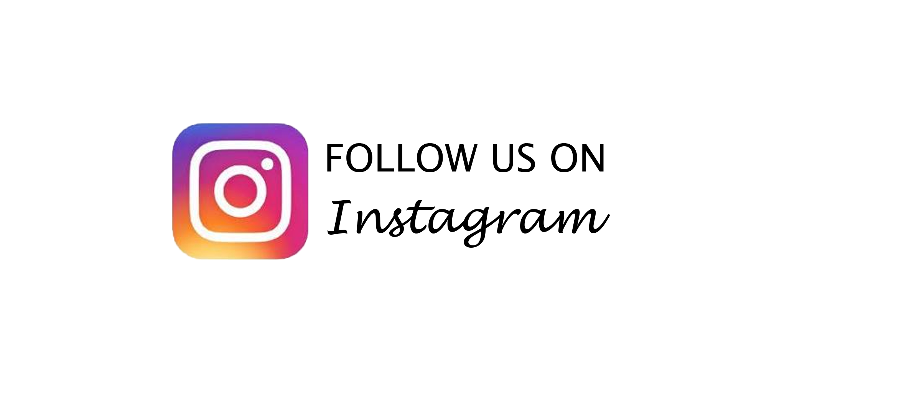

Hello! Welcome to my Tutorial website where you can gain new skills, practice and or inspire. To get to know about my artworks I am a year 13 student in my last year of Highschool. I have decided to create this website to help encourage students (or anyone who has a passion for art.) I plan to succeed in this goal by showing others what I was able to achieve throughout my years of highschool. Some of my work is from year 9 and some work I have just accomplished recently. I have tried many different techniques and have learnt what works best for me and I hope that you can also figure out what works best for you. If you liked the kind of work I produce I have made a tutorial page where I have videos of me demonstrating different techniques you can attempt and also some of my most basic drawings so you can gain some of the knowledge I know about drawing. But don't forget! there is no limit to how you can draw. Use techniques that work best for you and HAVE FUN! Art is about expressing yourself.
Email me for more questions: katie.ann65@gmail.com or...
